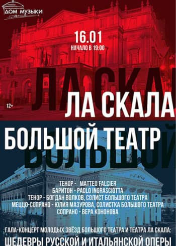

<section class="section section-home">
	<div class="section-home__container">
		<div class="section-home__content content">
			<div class="content__description">
				<h1 class="content__title">Большой театр</h1>
				<p class="content__text">Большо́й теа́тр — петербургский театр, существовавший в 1784—1886 годах, с
					1886 года — Петербургская консерватория. Первое постоянное в Санкт-Петербурге, крупнейшее в
					России
					и одно из крупнейших театральных зданий в Европе XVIII.</p>
				<a href="#!" class="content__button-link">афиша</a>
			</div>

		</div>

		<div class="section-home__poster poster">
			<div class="poster__container">
				<div class="poster__slider">
					
					
				</div>

				<div class="poster__control control">

					<div class="control__prev">
						<span class="control__arrow control__arrow_left"></span>
						<span class="span__prev">Пред</span>
					</div>

					<div class="control__next">
						<span class="span__next">след</span>
						<span class="control__arrow control__arrow_right"></span>
					</div>

				</div>
			</div>
		</div>
	</div>

</section>